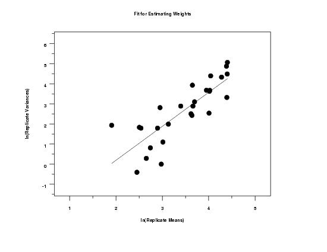

4.6. Case Studies in Process Modeling
4.6.2. Alaska Pipeline
4.6.2.5. |
Weighting to Improve Fit |
Using the power function model with the data for estimating the weights, the following results for the fit of ln(variances) against ln(means) for the replicate groups were generated.
Parameter Estimate Stan. Dev t Value B0 -3.18451 0.8265 -3.9 B1 1.69001 0.2344 7.2 Residual standard deviation = 0.85612 Residual degrees of freedom = 25
 The numerical fitting results and the plot of the replicate variances against the replicate means shows that a linear fit provides a reasonable fit with an estimated slope of 1.69.
We used an estimate of 1.5 for the exponent in the weighting function.
The residual plot from the fit to determine an appropriate weighting function reveals no obvious problems.
Parameter Estimate Stan. Dev t Value B0 2.35234 0.54312 4.3 B1 0.80636 0.02265 35.6 Residual standard deviation = 0.36459 Residual degrees of freedom = 105The resulting slope and intercept are 0.81 and 2.35, respectively. These are compared to a slope of 0.73 and an intercept of 4.99 in the original model.
The plot of the predicted values with the data indicates a good fit.

We need to verify that the weighting did not result in the other regression assumptions being violated. A 6-plot, after weighting the residuals, indicates that the regression assumptions are satisfied.
In order to check the assumption of homogeneous variances for the errors in more detail, we generate a full sized plot of the weighted residuals versus the predictor variable. This plot suggests that the errors now have homogeneous variances.

{kind=link}
{kind=link}
{kind=link}
{kind=link}